Technologies
Reality Capture
Technologies For Digital
Engineering & Digital Twins
Hardware, Software & Engineering Platforms for
Smarter Asset Management
Every project is unique, and every project requires the right
combination of technologies.
At WildPlantTS, we provide a complete Reality Capture
technology ecosystemfrom high-precision LiDAR scanners
and mobile mapping systems to engineering software, BIM
platforms, Digital Twins, and AI-powered asset intelligence.


The Right Technology for Every Project
Our engineers recommend technologies based on:
Whether you're planning to purchase Reality Capture technology (CAPEX) or
outsource scanning and digital engineering services (OPEX), our specialists help you
select the most suitable workflow for your project.
Our approach is not about selling individual products—it's about delivering complete
Capture → Process → Engineer → Operate solutions that create long-term business
value.
Accuracy
Accessibility
Requirements
Deliverables
Timeline
Readiness
Lifecycle Goals
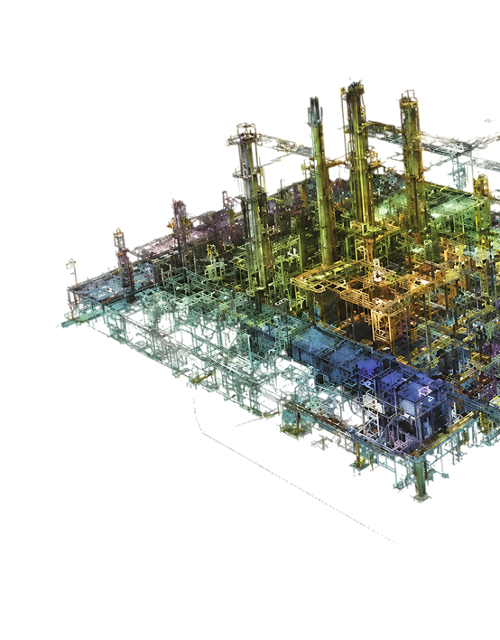
Explore Our Reality Capture Technologies
Terrestrial LiDAR
High-Accuracy Static 3D Laser Scanning
Terrestrial LiDAR delivers engineering-grade measurements for
buildings, industrial plants, infrastructure, manufacturing
facilities, and complex engineering environments.
Ideal for projects where precision, repeatability, and detailed
documentation are critical.
Typical Applications
- Existing Conditions Survey
- Industrial Plants
- Building Documentation
- Construction Verification
- Infrastructure Mapping
- Heritage Documentation
- Digital Twin Data Capture
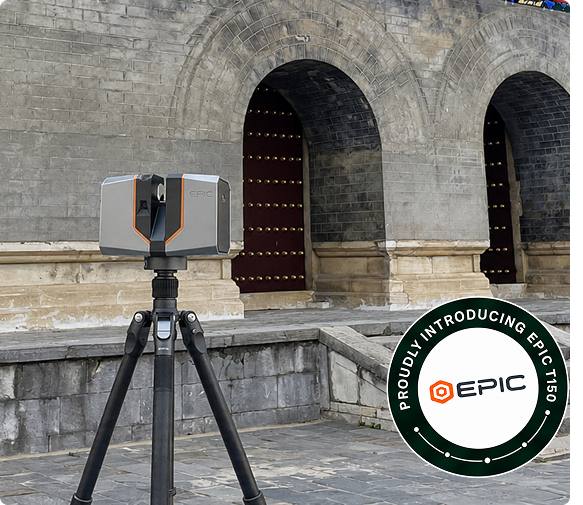
Mobile SLAM
Fast Indoor Reality Capture
Mobile SLAM (Simultaneous Localisation and Mapping) enables
rapid indoor mapping by capturing millions of points while
simply walking through a facility.
Ideal for large buildings where speed is more important than
millimetre-level accuracy.
Typical Applications
- Factories
- Warehouses
- Hospitals
- Commercial Buildings
- Campuses
- Facility Documentation
- Asset Inventory
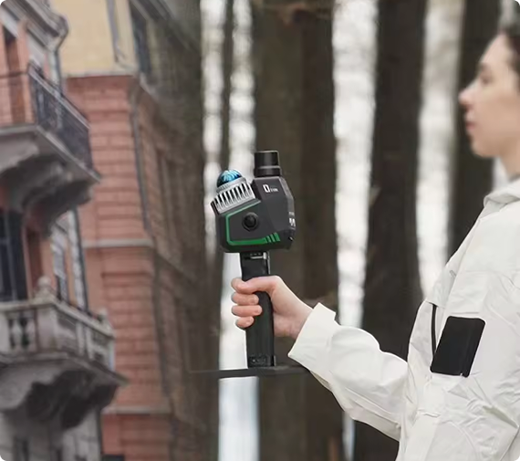
Drone LiDAR
Large-Scale Aerial Laser Mapping
Drone LiDAR combines UAV technology with laser scanning
to rapidly capture difficult, inaccessible, and large outdoor
environments.
Typical Applications
- Mining
- Corridors
- Highways
- Railways
- Transmission Lines
- Power Plants
- Stockpile Analysis
- Infrastructure
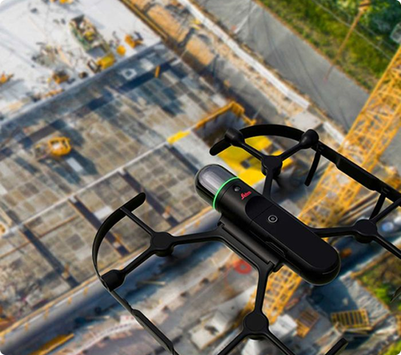
Point Cloud Processing
Transform Raw Scan Data into Engineering-Ready
Information
Capturing data is only the beginning.
Point Cloud Processing converts raw Reality Capture data
into accurate, clean, organised, and engineering-ready
datasets suitable for design, analysis, BIM, CAD, GIS, and
Digital Twin applications.
Typical Applications
- Construction Progress
- Mining
- Site Documentation
- Agriculture
- Urban Mapping
- Land Development
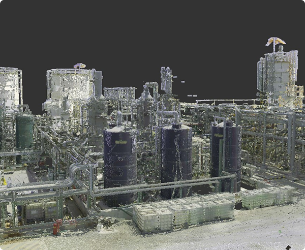
Drone Photogrammetry
High-Resolution Aerial Mapping
Drone Photogrammetry converts thousands of aerial
images into accurate engineering deliverables including
orthophotos, digital surface models, and textured 3D
models.
Typical Applications
- Construction Progress
- Mining
- Site Documentation
- Agriculture
- Urban Mapping
- Land Development
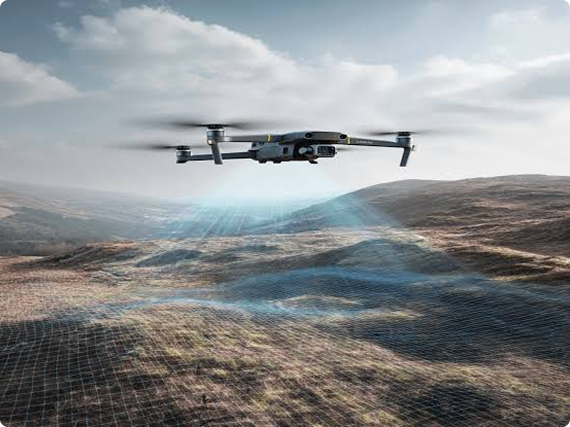
Technology Comparison
Compare Reality Capture Technologies
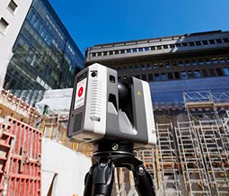
Terrestrial LiDAR
Best For
Engineering & As-
Built Documentation
Speed
Medium
Accuracy
Highest
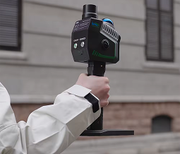
Mobile SLAM
Best For
Large Indoor
Facilities
Speed
Very High
Accuracy
High
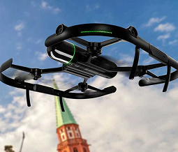
Drone LiDAR
Best For
Large Outdoor
Infrastructure
Speed
High
Accuracy
High
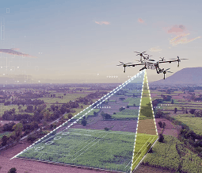
Drone
Photogrammetry
Best For
Visual Mapping &
Progress Monitoring
Speed
Very High
Accuracy
Medium
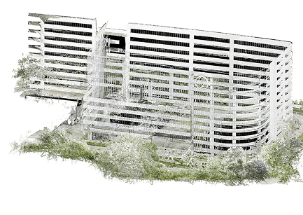
Engineering Platforms
Convert Reality Capture Data into
Engineering Deliverables
Engineering platforms transform point clouds into intelligent design models used
throughout planning, construction, operations, and maintenance.
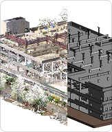
Scan to BIM Platform
Intelligent Building Information Modelling
Convert Reality Capture data into intelligent BIM
models for renovation, facility management,
construction, and Digital Twin implementation.
Outputs
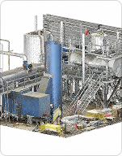
Plant Engineering Platform
Intelligent Process Plant Modelling
Develop accurate digital plant models for
brownfield engineering, shutdown planning,
retrofit projects, and future plant expansion.
Applications
Construction Intelligence
Build with Confidence
Using Reality Capture
Construction Intelligence combines Reality Capture with engineering analysis to verify construction quality, monitor progress, and compare site conditions against design models.
Applications
- Construction Quality Control
- Construction Verification
- Progress Monitoring
- Design Compliance
- Deviation Analysis
- Clash Detection
- As-Built Verification
Benefits
- Reduce Rework
- Improve Quality
- Protect Project Schedules
- Better Documentation
- Faster Decision-Making
- Risk Reduction
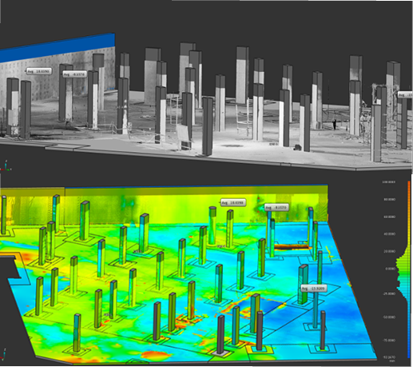
Twindeo™
WildPlantTS Digital Twin Platform
for the Entire Facility Lifecycle
Twindeo™
Twindeo is currently under development and will become WildPlantTS's integrated platform for Digital Twins, Asset Intelligence, Reality Capture, and Engineering Information Management.
Future releases will introduce advanced AI capabilities, IoT integration, predictive analytics, automated change detection, and intelligent asset management workflows.
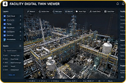
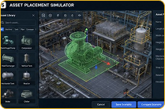
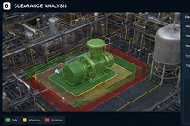
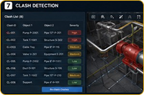
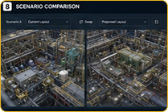
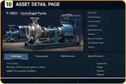
Which Technology Is
Right for Your Project?
Every project has unique technical requirements.
Our Reality Capture specialists help you choose the ideal combination of hardware, software, and engineering platforms based on:
- Project Scope
- Site Conditions
- Required Accuracy
- Engineering Deliverables
- Timeline
- Budget
- Industry Standards
- Future Digital Twin Requirements
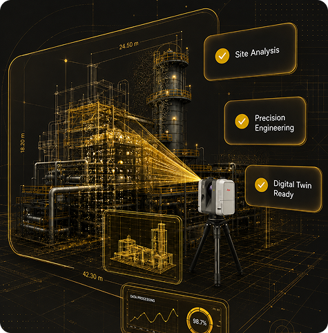
Why Choose WildPlantTS?
Engineering-Driven
Verification
We provide engineering verification, not just laser scanning.

Survey-Grade
Accuracy
Our verification workflows are built on millimetre-level terrestrial LiDAR measurements.

Multi-Model
Compatibility
We support BIM, CAD, IFC, Plant3D, Revit and engineering drawing comparisons.

Objective
Decision-Making
Verification reports are based on measured data, giving project teams reliable evidence for quality acceptance.

Better Project
Handover
Verified As-Built documentation supports commissioning, asset management and long-term facility operations.
Frequently Asked Questions
1. Why is an As-Built Conditions Scanning is important?
It provides an accurate digital record of the current site, reducing design errors, construction clashes, and costly rework.
2. Which technology is best for As-Built Conditions Surveys?
The choice depends on your project. We may use Terrestrial LiDAR for high-accuracy industrial facilities, Mobile SLAM for rapid indoor mapping, Drone LiDAR for large outdoor sites, or combine multiple technologies.
3. Can you create BIM models from the survey?
Yes. We provide Scan to BIM, Revit models, IFC models, CAD drawings, Plant3D models, and Digital Twin deliverables.
4. Can surveys be performed while facilities are operational?
Yes. Many projects can be completed with minimal disruption to ongoing operations.
5. Do you provide surveys for heritage buildings?
Yes. We specialize in non-contact documentation of heritage structures, monuments, museums, and culturally significant sites.